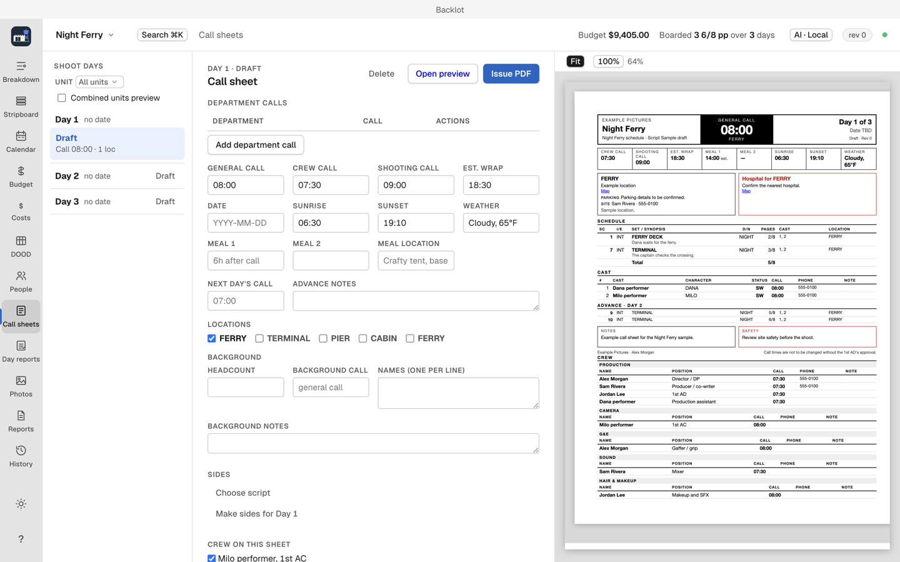

Call sheets

Call sheets are drafted for a shoot day, filled from the board, contacts and locations, then issued and distributed. (⌘8)
Draft one
- Choose the shoot day on the calendar.
- Backlot fills the sheet with that day's strips, cast and location.
- Add call times, department calls and notes.
- Issue the sheet: Backlot produces a fixed PDF that cannot be edited afterward.
Distribute
Issue a call sheet, then send it by email, as a text message, or as a phone-friendly published page. Recipients confirm receipt from their copy, and you can remind anyone who has not confirmed.
Confirmation links need the deployed confirm pages and a shared secret (see Setup and AI providers); without them, save the issued PDF and attach it manually in your own mail app. Backlot's distribution panel has no attachment-only email mode.
Corrections
To change an issued sheet, issue a correction. Backlot marks the change inside the corrected sheet; the original stays as issued. Then choose Distribute for the new issue and send it to the recipients. Issuing alone does not notify them.
Delivery history
Each issue keeps a delivery history with one row per attempt and its outcome.
- Retry failed deliveries from the history.
- Send the same issue to recipients added late.
- Remind recipients who have not confirmed.
- A delivery with an unknown outcome must be resolved before retrying, so one retry cannot become a duplicate send.
Video walkthrough
Draft and preview a call sheet · Captions. See video notes and draft narration.